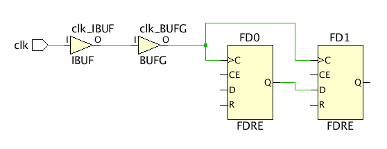

プライマリ クロックの理解
図: プライマリ クロックの例 :

clk 信号で FD0 と FD1 レジスタの開始時間と到着時間が制御されています。clk 入力ポートにクロックを作成すると、FD0/C から FD1/D へのタイミング パスのセットアップおよびホールド スラックがチェックされるようになります。次はその例です。
create_clock -name clk -period 6.667 [get_ports clk]
[Constraints for Pulse Width Check Only] の表には、セットアップ/ホールド/リカバリ/リムーバルではなく、パルス幅解析にのみ必要なプライマリ クロックがリストされます。パルス幅チェックでは、min_period、max_period、min_low_pulse_width、min_high_pulse_width とプリミティブ クロック ピンのスキューがチェックされます。デフォルトでは、これらの制約はウィザードで選択されていません。
[Primary Clocks] ページの理解
- [Recommended Constraints] : タイミング制約ウィザードでは、デザインのプライマリ クロックの候補が識別され、これらのクロックを定義するための制約が推奨されます。クロック周期および位相などの詳細は、ユーザーが定義するようになっています。
- [Constraints for Pulse Width Check Only] : これらは、パルス幅チェックを実行するのに必要であると識別されたクロックです。パルス幅チェックは、合成またはインプリメンテーションには影響しませんが、デザインのビットストリームを生成する前に実行しておく必要があります。詳細は、『Vivado Design Suite ユーザー ガイド : デザイン解析およびクロージャ テクニック』 (UG906) のこのセクションを参照してください。
- [Tcl Command Preview] : [Recommended Constraints] にリストされているようにプライマリ クロックを定義するのに使用される create_clock コマンドが表示されます。これらの制約がデザインに追加されます。
- [Existing Constraints] : 現在定義されているプライマリ クロック制約が表示されます。
上記のセクションにはそれぞれツールバーもあり、次のコマンドの 1 つまたは複数を実行できます
 |
Search | 検索文字列を入力するためのテキスト入力フィールドが表示されます。 |
| Select All | 推奨される制約すべてを選択します。 | |
| Edit selected row | クロックの属性を定義するための [Primary Clock Constraints] ダイアログ ボックスを開きます。これらの属性は、[Recommended Constraints] リストのフィールドを直接クリックしても編集できます。 | |
| Clock Networks | 新しいクロック ネットワーク レポートを生成する [Report Clock Networks] コマンドと既存レポートを開く [View Clock Networks] コマンドを実行するためのサブメニューが表示されます。 ヒント: クロック ネットワークは、[Clock Networks] ウィンドウにレポートされます。
|
関連項目
| 『UltraFast™ 設計手法ガイド (Vivado® Design Suite 用)』 (UG949) の「プライマリ クロックの作成」 | |
| 『Vivado Design Suite ユーザー ガイド : 制約の使用』 (UG903) の「プライマリ クロック」 | |
 |
Vivado Design Suite QuickTake ビデオ : 基本的なクロック制約の作成 |